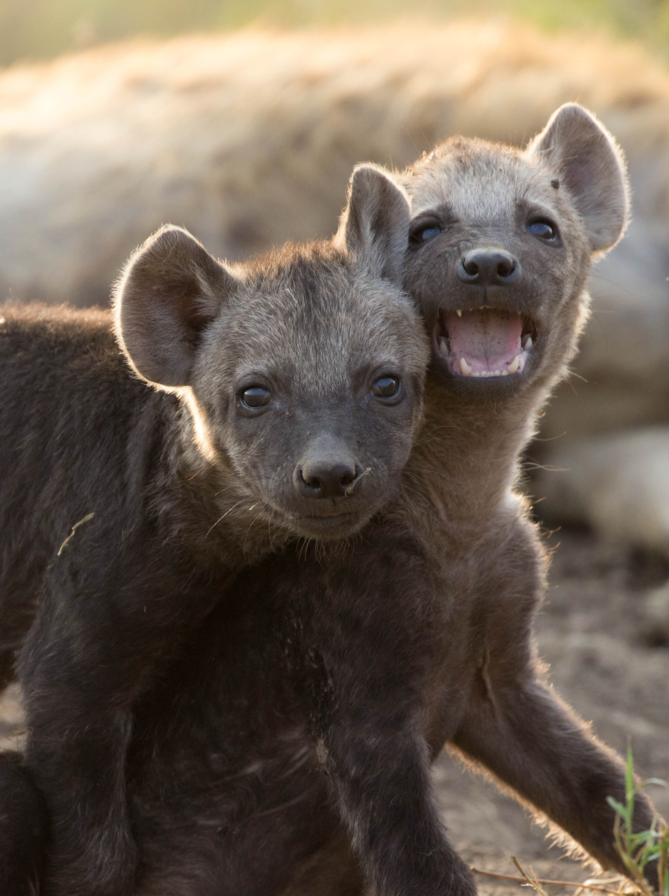
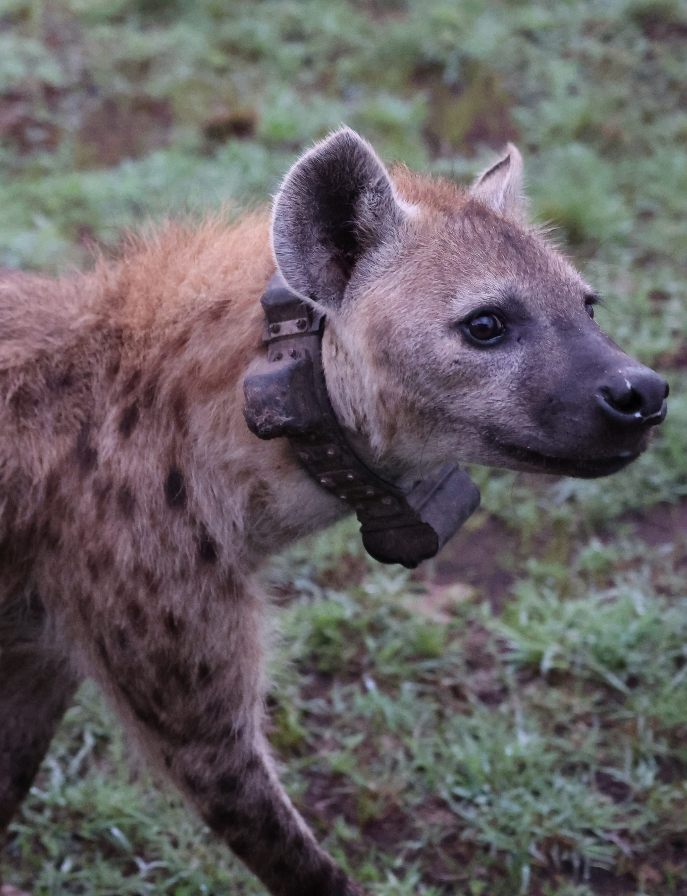
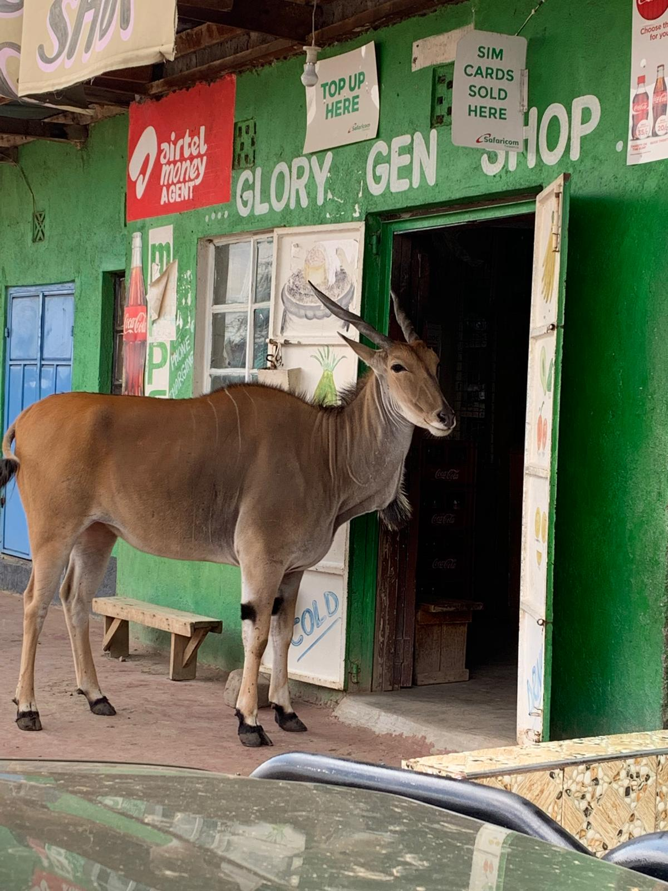

The MHP conducts collaborative research across several interrelated themes, all drawing on our 35+ year longitudinal dataset and ongoing field monitoring.
Ongoing baseline — All MHP Directors
Established in 1988, the MHP runs one of the longest continuous, individual-based field studies of any wild large carnivore. Near-daily observation sessions record the identities, behaviors, locations, social interactions, and life events including births, deaths, rank changes, and dispersal of every hyena in our focal clans, each recognized by its unique spot pattern.
These daily records feed a curated database with nearly 40 years of longitudinal data and provides the foundation for all other MHP research and a basis for evidence-based management in Kenya. This work integrates non-invasive hormone and diet sampling, GPS and VHF telemetry data for tracking hyena locations, and documentation of human-carnivore conflict. Baseline data has supported more than 100 publications and the training of dozens of Kenyan and international students.

Lead: Dr. Kay E. Holekamp — Michigan State University
Funded by the Human Frontier Science Program, this project fit all adult members of Serena South Clan (20+ hyenas) with multi-sensor collars that continuously record GPS location, acceleromter movement data, and audio data until scheduled automatic drop-offs.
By knowing where every hyena goes and what it hears and vocalizes, we can test how vocal communication coordinates collective action, especially the cooperative recruitment hyenas use to defend or steal kills from lions. Machine-learning tools classify calls and behaviors, and targeted playback experiments isolate cause and effect. The Mara clan is one arm of a comparative effort that also collars entire groups of meerkats in South Africa and coatis in Panama.

NSF LTREB — Laubach, Johnson-Ulrich & Holekamp
As settlements, livestock, roads, and tourism expand around the Mara, some of our hyena clans are facing rapidly urbanizing conditions while others remain in near-pristine habitat. This NSF Long-Term Research in Environmental Biology (LTREB) study creates an (un)natural experiment to study how animals adapt to environmental change and watch evolution in action.
We first identify which behavioral, physiological, and morphological traits shift with urbanization, then use the project’s multigenerational pedigrees to estimate their heritability, and finally link traits to survival and reproduction to measure nature selection. Combined with whole-genome sequencing, this lets us disentangle whether hyenas are adapting through micro-evolution, phenotypic plasticity, or both, and how large carnivores may cope in a rapidly changing world. Several MHP directors, including Eli Strauss, Tracy Montgomery, and Kenna Lehmann, are also developing complementary projects along the same urban gradient.

Publications
The MHP has produced a vast body of scientific literature spanning behavioral ecology, cognitive science, endocrinology, and conservation biology.